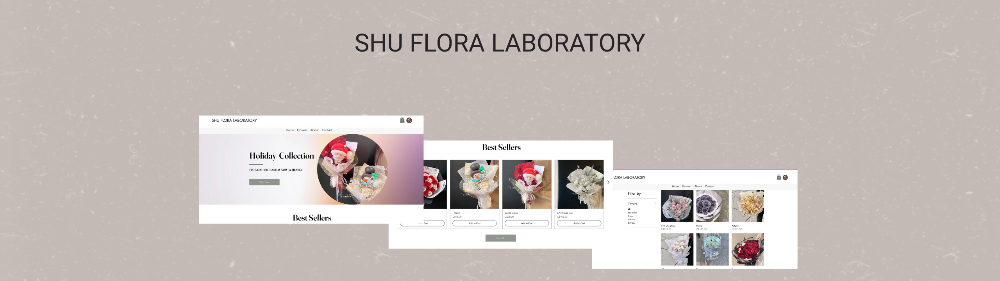
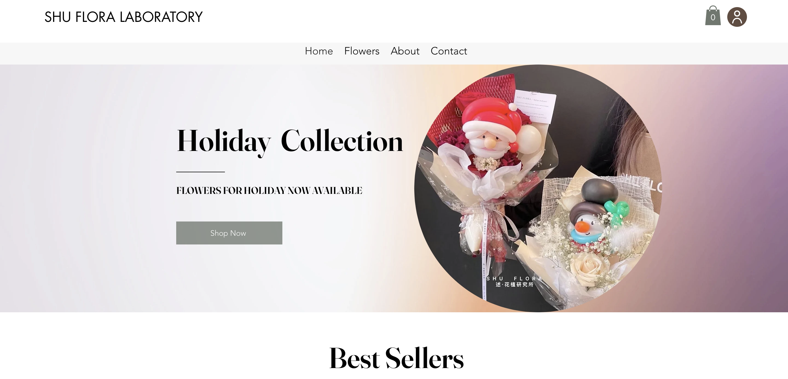
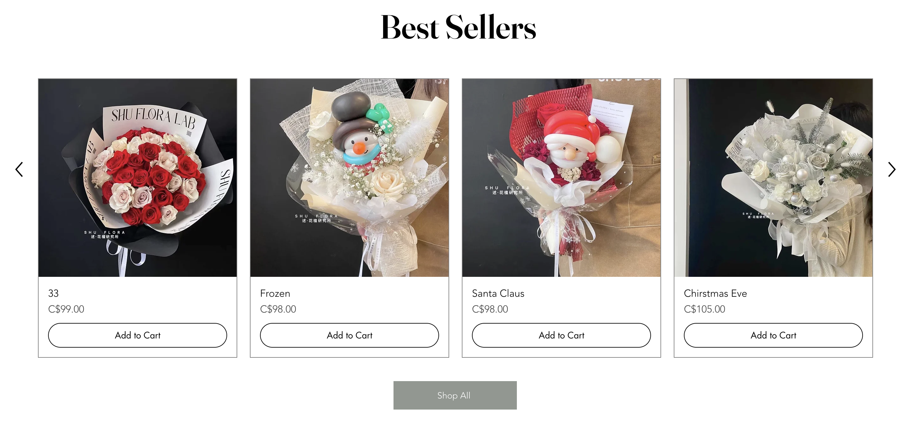
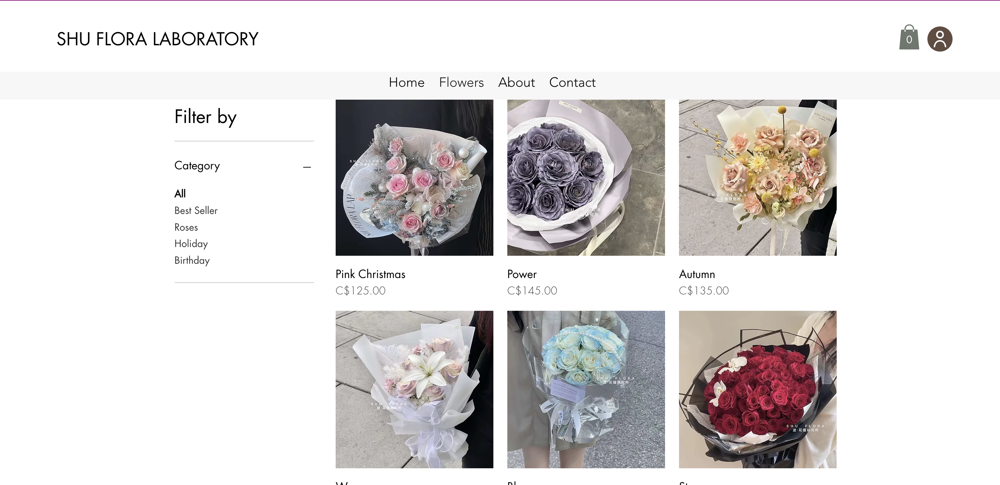

Designing a Simple and Functional E-commerce Website for a Local Flower Shop
A clean, elegant storefront experience built on Wix — prioritizing visual impact, easy browsing, and client independence in a platform they can manage on their own.

Overview
This project involved designing and building an online store for a local flower shop to support product browsing and online purchasing. The focus was on creating a clean, visually appealing experience that lets floral arrangements take center stage while keeping the shopping flow simple and intuitive.
The website was built entirely in Wix, chosen specifically because the client needed to manage and update the site independently after handoff — without requiring any technical support. This constraint shaped every design decision, from layout complexity to how products are organized.
Project Goals
The project began with direct client conversations to understand their business needs, brand preferences, and expectations for the final site. Through these early discussions, a clear picture emerged: the client wanted an online presence that felt elegant and seasonal, yet remained easy to update without technical help.
Four priorities guided the scope from the start:
-
Visual focus on the products
The flowers themselves are the selling point. Every layout decision was made to keep product imagery front and center — large, clean, and uncluttered by heavy interface elements.
-
Highlight seasonal collections
The client's inventory changes seasonally. The homepage needed a flexible featured section that could quickly surface new arrivals and best sellers without requiring a redesign each time.
-
Simple navigation for quick purchasing
Most customers arrive knowing roughly what they want. Navigation and filtering needed to get them to the right product in as few steps as possible.
-
Client-managed content
The platform choice had to support independent content updates — adding new products, swapping featured images, adjusting prices — without needing to contact a developer.
Design Approach
Based on the client's goals, the design prioritizes visual clarity and balance. Large product images, minimal interface elements, and generous whitespace were used throughout to let the flowers remain the primary focal point on every page.
The homepage opens on a full-width banner that establishes the brand aesthetic immediately — communicating warmth, elegance, and seasonality before a visitor has scrolled at all.

-
Brand-first landing
The homepage banner sets the visual tone immediately: full-bleed photography, minimal text, and a single call-to-action. The goal was to communicate quality and elegance before the visitor reaches any product — establishing trust before conversion.
-
Seasonal flexibility
The featured section below the banner is built as a swappable grid the client can update directly through Wix. This gives the homepage a fresh feel each season without requiring design work — the layout does the work, the client provides the content.
Storefront & Product Pages
The best seller section surfaces the shop's most popular arrangements in a clean grid. Each product card uses large photography, minimal overlay text, and a direct path to the product detail page — reducing clicks between discovery and purchase.

The product listing page organizes items by category with straightforward filtering — allowing customers to narrow by occasion, arrangement type, or price range without overwhelming them with options. The filter panel was kept intentionally simple, since most customers are browsing by context (anniversary, birthday, seasonal gift) rather than by technical product attributes.

-
Context-based filtering
Rather than filtering by technical specs, the category structure maps to how customers actually shop for flowers: by occasion, by arrangement type, and by price. This reduces decision fatigue and keeps the path to checkout short.
-
Photography-led product cards
Every product card leads with a large, high-quality photograph. Price and name appear below without competing for visual attention. This approach lets the product itself close the sale — the interface just gets out of the way.
Reflection
This project reinforced that the most important design constraint is often not visual — it's operational. Designing for a client who needs full independence after handoff changes what "good design" means: the best solution is not always the most sophisticated one, but the one the client can actually use and maintain.
Client communication as design input
Early conversations shaped the entire project scope. Understanding the client's technical comfort level and day-to-day workflow was just as important as understanding their aesthetic preferences.
Platform constraints shape decisions
Wix's capabilities and limitations directly influenced layout choices, component complexity, and how the content was structured. Working within a constraint productively — rather than fighting it — produced a cleaner, more maintainable result.
Letting the product lead
For a visual product like flowers, the strongest UX decision was restraint. The most effective pages were those that stepped back and let the photography do the work — with interface elements serving as structure, not decoration.
Other Projects

Pacific Northwest X Ray
Designing a scalable website & visual system for medical imaging.
Personalized Nutrition
Designing a tailored tracking experience through data visualization.